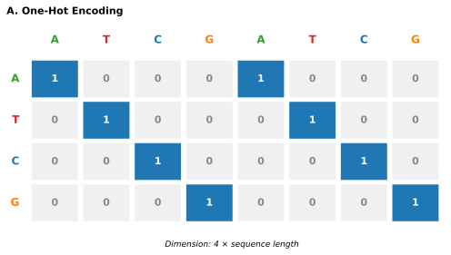
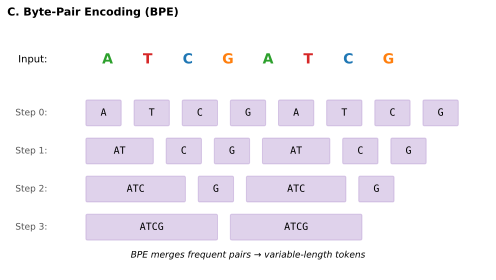
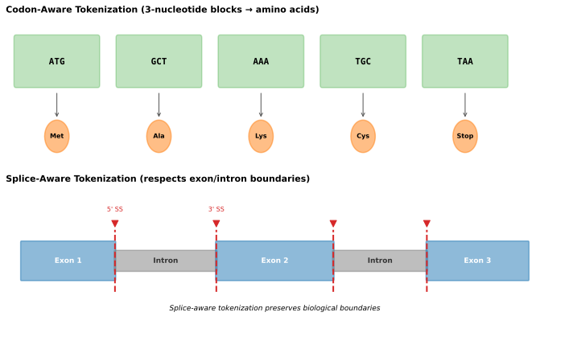
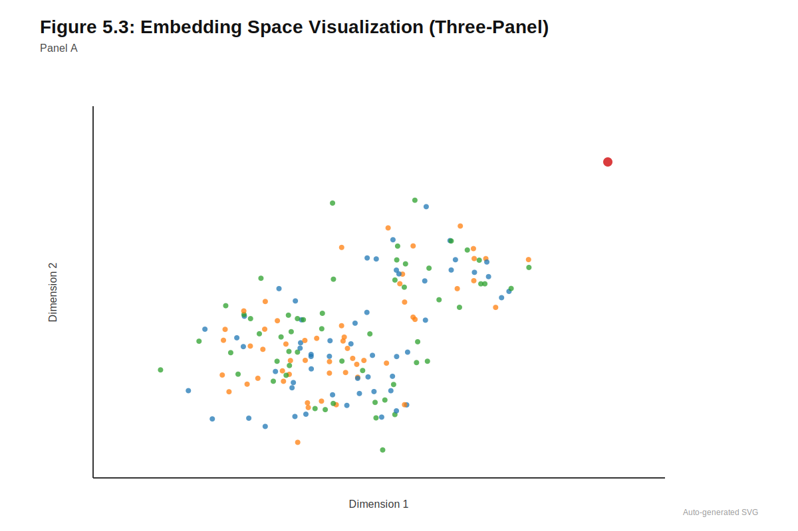
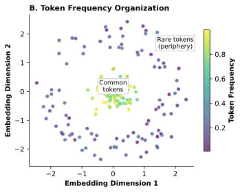
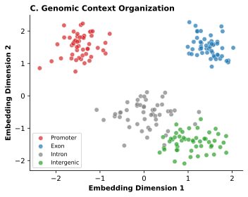

5 Tokens and Embeddings
How you see determines what you can learn.
Estimated reading time: 25-35 minutes
Prerequisites: Basic understanding of DNA structure and the four nucleotides (A, C, G, T). Familiarity with the concept of neural networks and the distinction between categorical and numerical data. No prior experience with natural language processing is required, though familiarity with word embeddings will aid understanding.
You will learn:
- Why tokenization is a foundational design decision that constrains what genomic models can discover
- The tradeoffs between one-hot encoding, k-mer tokenization, BPE, and single-nucleotide approaches
- How learned embeddings transform discrete tokens into continuous representations
- When to use each tokenization strategy based on application requirements
Key insight: The choice of how to segment and represent genomic sequence is not merely technical preprocessing: it fundamentally determines what patterns a model can detect, what resolution it can achieve, and which biological questions it can answer.
In 2018, a variant effect predictor showed near-perfect performance on its benchmark dataset. Clinical teams deployed it to interpret variants near exon-intron boundaries. The model failed to flag a pathogenic variant at a cryptic splice site: not because the architecture was flawed, not because training data was insufficient, but because the tokenization scheme grouped nucleotides into six-base chunks. The critical AG dinucleotide that created an aberrant splice acceptor was split across two tokens, invisible to the attention mechanism as a meaningful unit. A preprocessing decision made before training began determined whether a patient received an accurate diagnosis.
Before a genomic model learns any parameters, before it sees any training data, before architecture choices are made, a prior decision has already constrained what it can discover: how will sequence be represented? This decision is not merely technical. A tokenization scheme that merges nucleotides into coarse multi-base units may obscure the single-nucleotide resolution needed to detect pathogenic splice variants. An embedding strategy that encodes local context may lose the long-range dependencies that connect distal enhancers to their target genes. A position encoding that assumes fixed sequence length may fail on the variable-length inputs that clinical applications require. These choices propagate through every subsequent design decision, shaping what patterns the model can detect, what resolution it can achieve, and ultimately which biological questions it can answer.
The challenge is that biological structure operates at multiple scales simultaneously, and no single representation captures all scales equally well. Transcription factor binding sites span 6 to 12 nucleotides; the regulatory grammar linking multiple sites extends over hundreds of base pairs. Coding sequences follow a strict three-nucleotide codon structure; noncoding regions have no such constraint. A splice acceptor consists of just two nucleotides (the AG dinucleotide marking exon boundaries), yet splice regulation depends on sequences spanning the entire intron. Any representation scheme must navigate these biological realities while remaining computationally tractable for sequences that dwarf typical language model inputs by orders of magnitude.
An analogy to natural language processing illuminates the fundamental tradeoffs. Training a language model on English text requires deciding how to segment the continuous character stream into discrete tokens. Character-level tokenization preserves maximum resolution but creates sequences too long for efficient processing. Word-level tokenization compresses the sequence but loses information about morphology and subword structure. Learned subword vocabularies (byte-pair encoding, SentencePiece) balance these concerns by letting corpus statistics guide segmentation. DNA presents similar choices but with critical differences: only four letters rather than dozens, no natural word boundaries, and the biological structure operating at multiple scales that language lacks. The representation strategies that genomic foundation models employ range from fixed \(k\)-mer vocabularies through learned tokenization schemes, each choice shaping what downstream models can learn.
Before viewing the figure below, make a prediction: If you had to design four different ways to tokenize the DNA sequence “ACGTACGT”, what tradeoffs would each approach involve? Consider: - How many tokens would each strategy produce? - Which approach would best preserve single-nucleotide resolution? - Which might enable the longest context windows for transformers? - How would each handle a single-nucleotide variant?




5.1 One-Hot Encoding: The CNN Foundation
A child inherits a DMD variant from her mother. Whether this variant causes Duchenne muscular dystrophy or remains clinically silent depends on its exact position relative to the exon-intron boundary: one nucleotide can determine whether the splicing machinery recognizes the junction. This is why single-nucleotide resolution is not a technical nicety but a clinical necessity. The earliest deep learning approaches to genomic sequence modeling recognized this requirement and adopted the simplest representation capable of preserving it: one-hot encoding, where each nucleotide becomes a sparse binary vector with a single active element indicating its identity. Adenine is encoded as \([1, 0, 0, 0]\), cytosine as \([0, 1, 0, 0]\), guanine as \([0, 0, 1, 0]\), and thymine as \([0, 0, 0, 1]\). A sequence of length \(L\) thus becomes a matrix of dimensions \(4 \times L\), interpretable as four channels analogous to the RGB channels of an image plus one.
The properties that made one-hot encoding dominant in the convolutional neural network (CNN) era stem from this simple design. The representation is lossless, preserving every nucleotide explicitly without information compression. It maintains single-nucleotide resolution, enabling detection of effects from individual SNPs. The encoding exhibits translation equivariance, meaning convolutional filters learn position-invariant motifs recognizable anywhere in the sequence. And it requires no preprocessing, vocabulary construction, or tokenizer training, making implementation straightforward. DeepSEA, ExPecto, and SpliceAI all employed one-hot encoding without modification, with convolutional layers learning to detect sequence patterns directly from the binary representation. These convolutional architectures and their learned pattern detectors are examined in Chapter 6.
The key insight underlying CNN success with one-hot encoding is that convolutions process sequences through local operations. Each filter examines only a small window of positions at a time, and the sparse, orthogonal nature of one-hot vectors poses no obstacle to this local processing. First-layer filters effectively learn position weight matrices that score short \(k\)-mer patterns, while deeper layers capture combinations and spatial arrangements of these primitive motifs. The representation worked because it aligned with the architectural inductive bias of convolutions: local pattern detection does not require global sequence compression.
One-hot encoding’s success with CNNs was not accidental: it aligned perfectly with the architectural inductive bias. Convolutions learn local patterns, and one-hot’s orthogonal, sparse representation posed no obstacle to this local processing. The representation matched the architecture’s strengths.
For transformer architectures, one-hot encoding creates a fundamental mismatch. Transformers compute attention between all pairs of positions, with computational cost scaling quadratically with sequence length. A 10 kb sequence requires 100 million pairwise attention computations per layer, quickly becoming prohibitive for the long sequences genomic applications require. The problem compounds because transformers learn dense embeddings for each token, but with only four possible nucleotides, the embedding layer has minimal opportunity for rich representation learning.
This mismatch forces an impossible choice between the long contexts needed for regulatory modeling and computational tractability. Transformer context windows of 512 to 4,096 tokens translate to only 512 to 4,096 base pairs when using one-hot encoding, a tiny fraction of genes or regulatory regions. Compare this to Enformer’s 200 kb receptive field or SpliceAI’s 10 kb context, both achieved through architectural innovations operating on one-hot encoded sequence (Chapter 6). Sub-quadratic architectures like HyenaDNA resolve this tension through a different approach: maintaining single-nucleotide tokenization while replacing attention with operations that scale more gently with sequence length (Section 5.4). For standard transformer architectures, however, the quadratic barrier motivated the search for alternative representations that compress genomic sequences into fewer tokens while preserving biological information.
Before reading on, consider: if transformers require fewer tokens to process long sequences efficiently, how might you reduce the number of tokens while still representing the full sequence? What tradeoffs might each approach involve?
5.2 K-mer Tokenization: The DNABERT Approach
The computational constraints of one-hot encoding for transformers led researchers to explore sequence compression through \(k\)-mer tokenization. This approach treats overlapping subsequences of length \(k\) as tokens, drawing an analogy between k-mers and words in natural language. Just as sentences compose words carrying meaning through sequence and combination, genomic sequences might be understood as \(k\)-mer “words” encoding biological function through their arrangement. DNABERT pioneered this approach for genomic transformers in 2021, using 6-mers as tokens and training a BERT-style masked language model on human reference sequences (Ji et al. 2021).
The \(k\)-mer vocabulary has a fixed size of \(4^k\) possible tokens. For 6-mers, this yields 4,096 distinct tokens, comparable to vocabulary sizes in some natural language models. Each token represents six consecutive nucleotides, creating direct correspondence between subsequence and token identity. DNABERT used overlapping k-mers: for a sequence like ACGTACGT, successive 6-mer tokens share five nucleotides with their neighbors. The sequence position advances by one nucleotide at a time, generating one token per position (minus the \(k\)-1 positions at the sequence end where a complete \(k\)-mer cannot form).
DNABERT provided valuable proof of concept for genomic transformers. It demonstrated that self-supervised pretraining on raw DNA sequences could improve performance over training from scratch, that learned embeddings could capture biologically meaningful regularities even when trained only on the reference genome, and that BERT-style architectures could transfer across multiple downstream tasks. DNABERT achieved strong performance on promoter prediction, splice site identification, and transcription factor binding site recognition after fine-tuning with relatively small amounts of task-specific labeled data. The model’s architecture and subsequent developments are examined in Chapter 15, while the transfer learning approaches that enable adaptation to specific tasks are treated in Chapter 9.
Consider a single-nucleotide variant (SNP) at some position in a sequence tokenized with overlapping 6-mers. How many tokens would this single nucleotide change affect? Think about which 6-mer windows would include that position.
A single nucleotide change affects exactly 6 tokens in overlapping 6-mer tokenization. The changed nucleotide appears in six different 6-mer windows: the one starting at that position, plus the five windows that start before but include that position. This propagation of changes across multiple tokens complicates variant effect interpretation.
Subsequent analysis revealed fundamental limitations rooted in the overlapping design. DNABERT-2 articulated these problems clearly in 2024 (Zhou et al. 2024). Overlapping k-mers provide no sequence compression: the number of tokens equals the number of nucleotides (minus a small constant), so context window limitations persist unchanged. A 10 kb sequence still requires approximately 10,000 tokens, and the quadratic attention complexity remains prohibitive for long sequences. The very design that seemed to add biological meaning through \(k\)-mer structure failed to address the computational bottleneck motivating the approach.
The overlapping design creates additional complications beyond computational cost. A single nucleotide contributes to \(k\) different tokens (each \(k\)-mer containing that position), complicating interpretation of which token drives any given prediction. This ambiguity becomes particularly problematic for variant effect interpretation, where understanding how a specific nucleotide change alters model predictions is essential. The effect of a single substitution propagates through \(k\) different tokens in ways that can be difficult to disentangle. The model must also learn that overlapping tokens share nucleotides, a relationship obvious from the tokenization scheme but requiring discovery through training. This redundancy consumes model capacity that could otherwise capture more complex biological patterns. The fixed 4^\(k\) vocabulary does not adapt to corpus statistics; frequent and rare k-mers receive equal representation capacity in the embedding table despite potentially differing importance for prediction.
5.3 Byte Pair Encoding: Learning the Vocabulary
The limitations of \(k\)-mer tokenization raise a question: what if the vocabulary itself could be learned from data? Consider how a child learning to read progresses from sounding out individual letters to recognizing common letter combinations (“th,” “ing,” “tion”) as single units. The brain naturally groups frequently co-occurring patterns into chunks, making reading faster without losing the ability to decode unfamiliar words letter-by-letter. Byte Pair Encoding (BPE) applies this same principle to DNA: it discovers which nucleotide combinations appear frequently together and groups them into single tokens, while rare sequences remain as individual nucleotides.
BPE addresses vocabulary learning by constructing vocabulary through iterative discovery of frequent subsequences rather than defining tokens through a fixed rule. The algorithm, originally developed for data compression, builds vocabulary through a simple procedure. BPE initializes the vocabulary with single nucleotides: {A, C, G, T}. It then scans the training corpus to count all adjacent token pairs, identifies the most frequent pair, merges this pair into a new token added to the vocabulary, and replaces all instances in the corpus with the merged token. The process repeats through many iterations (typically thousands), building a vocabulary of variable-length tokens capturing frequently occurring sequence patterns. ::: {.callout-note title=“Worked Example: BPE in Action”} Consider a tiny corpus consisting of a single sequence: ACGTACGTACGT
Step 1: Initialize vocabulary Vocabulary: {A, C, G, T} Tokenized sequence: A-C-G-T-A-C-G-T-A-C-G-T (12 tokens)
Step 2: Count adjacent pairs - AC appears 3 times - CG appears 3 times - GT appears 3 times - TA appears 2 times
Step 3: Merge most frequent pair (tie-break: AC) New vocabulary: {A, C, G, T, AC} Tokenized sequence: AC-G-T-AC-G-T-AC-G-T (9 tokens)
Step 4: Count pairs again - ACG appears 3 times - GT appears 3 times - TAC appears 2 times
Step 5: Merge ACG Vocabulary: {A, C, G, T, AC, ACG} Tokenized sequence: ACG-T-ACG-T-ACG-T (6 tokens)
After just 2 merge iterations, our 12-nucleotide sequence compressed from 12 tokens to 6 tokens, a 2x compression. The algorithm discovered that “ACG” is a repeating unit worth representing as a single token. In real genomic applications with millions of sequences, BPE discovers biologically meaningful patterns like Alu element fragments, common regulatory motifs, and repetitive sequences. :::
Why does frequency-based merging produce biologically meaningful tokens? Frequency in genomic sequence is not random: sequences that appear repeatedly throughout the genome often represent functional units or structural patterns. Alu elements, the most abundant transposable elements in the human genome, appear over one million times; their characteristic subsequences will be merged into dedicated tokens early in BPE training. Regulatory motifs like the TATA box or common transcription factor binding sites recur across thousands of promoters. Microsatellites and other repetitive elements have characteristic patterns that appear genome-wide. By iteratively merging what co-occurs most often, BPE’s vocabulary converges on tokens that reflect genuine patterns in genome organization rather than imposing arbitrary boundaries. A token that appears frequently across the training corpus likely represents something biologically coherent (whether a functional motif, a repetitive element, or a conserved structural pattern), while unique random sequences remain decomposed into shorter subunits.
Before reading on, consider: if BPE merges the most frequent adjacent pairs, what kinds of genomic sequences do you predict would be compressed most aggressively (represented by long tokens)? What kinds would remain as short tokens or single nucleotides?
The critical difference from \(k\)-mer tokenization is that BPE produces genuine sequence compression through non-overlapping tokens. Unlike overlapping k-mers where each nucleotide generates its own token, BPE creates tokens spanning multiple nucleotides without overlap. A 10 kb sequence might compress to 2,000 or 3,000 tokens depending on its repetitive structure, enabling transformers to process substantially longer sequences within the same context window.
DNABERT-2 replaced 6-mer tokenization with BPE and demonstrated dramatic improvements (Zhou et al. 2024). The new model achieved comparable performance to state-of-the-art approaches while using 21 times fewer parameters and requiring approximately 92 times less graphics processing unit (GPU) time in pretraining. The Nucleotide Transformer (Chapter 15) similarly employs BPE tokenization, as do protein language models that must handle amino acid sequences with different compositional properties (Chapter 16). These efficiency gains stem directly from non-overlapping tokenization: actual sequence compression enables processing longer sequences with the same computational budget, and eliminating overlapping token redundancy allows the model to focus capacity on learning biological patterns rather than token relationships.
BPE’s power lies in corpus-adaptive vocabulary construction. Repetitive elements like Alu sequences receive dedicated long tokens because they appear frequently, while rare sequences decompose into short subunits. The vocabulary learns genomic structure rather than imposing arbitrary boundaries.
The BPE vocabulary learns corpus statistics through its construction process. Repetitive elements appearing frequently throughout the genome (such as Alu sequences or common regulatory motifs) receive dedicated tokens spanning many nucleotides. These long tokens enable efficient representation of repetitive regions while preserving single-nucleotide resolution for unique sequences. Rare sequences that BPE never encountered during vocabulary construction are represented as concatenations of shorter subunits, maintaining the ability to encode any sequence while allocating more representation capacity to common patterns.
GROVER (Genome Rules Obtained Via Extracted Representations) extended this approach by training BPE specifically on the human genome and selecting vocabulary using a custom next-\(k\)-mer prediction task (Sanabria et al. 2024). Analysis of the resulting token embeddings revealed that the learned vocabulary encodes biologically meaningful structure without explicit supervision. Common tokens cluster separately from rare ones in embedding space. GC-rich tokens segregate from AT-rich tokens, reflecting the different properties of these sequence compositions. Token length correlates with specific embedding dimensions, allowing the model to represent both the content and extent of each token. Some tokens appear primarily in repetitive regions while others distribute broadly across the genome, and this localization pattern emerges in the learned representations.
BPE introduces complications of its own that matter for clinical applications. Variable-length tokens mean that variant positions fall at different locations relative to token boundaries depending on local sequence context. A SNP might fall in the middle of a long token in one sequence context but at a token boundary in another, potentially affecting how the model represents and processes the variant. The same nucleotide change may alter different numbers of tokens depending on surrounding sequence, creating inconsistent input representations for what should be comparable biological events. The tradeoff between compression and interpretability becomes a design choice depending on intended application.
The following table summarizes the key differences between the tokenization strategies discussed so far.
| Strategy | Tokens per kb | Vocabulary Size | Compression | Variant Localization | Best For |
|---|---|---|---|---|---|
| One-hot | 1,000 | 4 | None | Exact | CNNs, short contexts |
| Overlapping k-mers | ~1,000 | \(4^k\) (e.g., 4,096) | None | Ambiguous (affects k tokens) | Proof-of-concept transformers |
| BPE | 200-500 | Tunable (4K-32K) | 2-5x | Context-dependent | Long-context transformers |
| Single-nucleotide | 1,000 | 4-5 | None | Exact | Sub-quadratic architectures |
5.4 Single-Nucleotide Tokenization: Maximum Resolution
While \(k\)-mer and BPE tokenization compress sequences to enable longer context windows, they sacrifice the single-nucleotide resolution essential for variant effect prediction. A single nucleotide polymorphism (SNP) can completely alter protein function through mechanisms ranging from amino acid substitution to splice site disruption to regulatory element ablation. When a pathogenic variant and a benign variant differ by one nucleotide position, multi-nucleotide tokens obscure exactly where variants fall and how they relate to the boundaries of biological features.
HyenaDNA took the opposite approach in 2023, using single-nucleotide tokens with no compression whatsoever (Nguyen et al. 2023). Each nucleotide (A, C, G, T) becomes a separate token, maintaining maximum possible resolution. Every nucleotide is independently represented, SNP effects can be isolated to specific token positions without ambiguity, and no tokenization artifacts depend on surrounding sequence context.
The challenge is sequence length. A 1 Mb region requires 1 million tokens, far beyond standard transformer capacity. HyenaDNA addressed this through architectural innovation rather than tokenization compromise. The Hyena architecture replaces the attention mechanism with implicit convolutions (long convolutions parameterized by a small neural network) that scale sub-quadratically with sequence length. Where attention computes explicit pairwise interactions between all positions, Hyena achieves similar representational power through operations whose cost grows only slightly faster than linearly. This enables processing sequences hundreds of times longer than attention-based transformers within the same computational budget. The architectural principles underlying Hyena and related sub-quadratic approaches are examined in detail in Chapter 7.
The practical impact was substantial: a 500-fold increase in context length over dense attention models while maintaining single-nucleotide resolution. HyenaDNA could process 1 Mb sequences where DNABERT was limited to approximately 500 bp and the Nucleotide Transformer to approximately 6 kb. On the Nucleotide Transformer benchmarks, HyenaDNA reached state-of-the-art performance on 12 of 18 datasets with orders of magnitude fewer parameters and less pretraining data. On GenomicBenchmarks, it surpassed prior state-of-the-art on 7 of 8 datasets by an average of 10 accuracy points.
HyenaDNA also demonstrated the first use of in-context learning in genomics. The model could perform tasks based on examples provided in the context window without any fine-tuning (conditioning on demonstration sequences rather than updating parameters). This capability, familiar from large language models, had not previously been shown for genomic sequences.
Why does sub-quadratic complexity enable in-context learning? In-context learning requires both (1) long context to hold demonstration examples and (2) sufficient model capacity for those examples to influence computation. Attention’s quadratic cost forced prior models to choose: short context to save computation, or tiny embeddings to fit within memory limits. Sub-quadratic architectures eliminate this constraint, enabling both long context and rich representations simultaneously. With a 1 Mb context window, the model can see many demonstration sequences before making a prediction—creating the conditions for in-context learning to emerge from scale rather than from architectural changes. See section Section 10.6.3 for more on in-context learning.
Sub-quadratic architectures fundamentally changed the tokenization calculus. When computational constraints no longer force a choice between resolution and context length, single-nucleotide tokenization becomes the natural choice for applications requiring precise variant interpretation. HyenaDNA decoupled the resolution decision from the context length decision.
The development of sub-quadratic architectures including Hyena, Mamba, and state space models has fundamentally changed the tokenization calculus [Citations Needed]. When computational constraints no longer force a choice between resolution and context length, single-nucleotide tokenization becomes the natural choice for applications requiring precise variant interpretation. The architectural innovations examined in Chapter 7 effectively decouple the resolution decision from the context length decision, eliminating what had seemed like an inherent tradeoff. HyenaDNA and Caduceus, examined in Chapter 15, demonstrate how these architectures enable million-base contexts at single-nucleotide resolution.
5.5 Biologically-Informed Tokenization
Standard tokenization schemes treat DNA as a homogeneous string of characters, ignoring the biological reality that different genomic regions serve fundamentally different functions and follow different structural rules. Coding sequences obey a strict codon structure where every three nucleotides encode an amino acid; noncoding regions have no such constraint. Treating these regions identically wastes an opportunity to build biological knowledge directly into the representation.
Consider a mutation that changes the third position of a codon from AAG (lysine) to AAA (also lysine)—a synonymous change that preserves amino acid identity. How would different tokenization strategies represent this mutation? Would a k-mer approach capture that this is synonymous? Would codon-level tokenization?
For protein-coding regions, the natural unit of sequence is the codon rather than the individual nucleotide. GenSLMs pioneered codon-level tokenization for genomic foundation models in 2022, treating each three-nucleotide codon as a single token and exploiting the fact that codons are the biologically meaningful units of protein-coding sequence (Zvyagin et al. 2022). The 64-codon vocabulary captures the complete space of possible genetic code words, with each token corresponding to either an amino acid or a stop signal. This alignment with translation semantics means that mutations affecting amino acid identity (nonsynonymous changes) alter the token sequence, while synonymous mutations within a codon alter the specific token used but maintain broader codon-family structure.

Life-Code extended codon-aware tokenization to broader genomic contexts in 2025, encoding coding and noncoding regions in a way that respects reading frame and local biological function (Liu et al. 2025). Coding regions are tokenized by codons, aligning token boundaries with the fundamental unit of protein translation. Noncoding regions, lacking codon structure, are tokenized by learned patterns capturing regulatory motifs and other functional elements. This biologically-informed design enables Life-Code to learn protein structure through knowledge distillation from protein language models, capture interactions between coding and noncoding regions within a unified framework, and achieve state-of-the-art results across tasks involving DNA, RNA, and protein.
BioToken extends tokenization further to include explicit genomic structural annotations (Medvedev et al. 2025). Rather than treating variants as implicit changes in the sequence string, BioToken creates tokens explicitly representing SNPs, insertions, and deletions. Known regulatory elements receive dedicated tokens encoding their presence and type. Gene structure, chromatin state, and other functional annotations integrate directly into the token representation. This approach treats tokens as rich entities bundling nucleotides with positional, functional, or experimental context.
Variant-aware representations hold particular promise for clinical applications, where the input is often “reference plus variant” rather than a generic sequence. By incorporating biological inductive biases directly into tokenization, BioToken’s associated model achieves competitive or superior performance to specialized models like Enformer and SpliceAI with significantly fewer parameters. This efficiency suggests that appropriate representation can partially substitute for model scale by making the learning problem easier through informed structure.
The broader principle is that tokenization can and should incorporate biological structure when that structure is known and relevant. BPE learns statistical patterns from the corpus, but those patterns need not correspond to biological units. Codon tokenization imposes biological semantics directly, at the cost of applicability to noncoding regions. Future approaches might combine these strategies: codon-aware tokenization for coding regions, BPE or single-nucleotide tokens for noncoding sequence, and explicit variant tokens for clinical interpretation tasks.



5.6 From Tokens to Embeddings: Learning Representations
A patient’s genome contains a variant of uncertain significance (VUS) in SCN5A, a cardiac ion channel gene. Whether this variant affects protein function depends on subtle sequence features that determine how the protein folds, where it localizes, and how it interacts with other cellular components. The clinical question is binary (pathogenic or benign), but the biological answer emerges from continuous biophysical properties. Classical methods for variant interpretation (Chapter 4) capture some of these relationships through hand-crafted features; learned embeddings offer an alternative approach where relevant patterns emerge from data.
Think of embeddings like giving each word a GPS coordinate rather than a dictionary index. A dictionary assigns arbitrary numbers to words (apple = 47,231; orange = 89,102), revealing nothing about their relationships. GPS coordinates, by contrast, place similar items near each other: the coordinates for “apple” and “orange” would cluster in the fruit section, while “hammer” and “screwdriver” would cluster elsewhere. Embeddings work the same way for tokens: they assign coordinates in a mathematical space where similar tokens naturally end up near each other, enabling the model to generalize from one to another.
This gap between discrete genetic variation and continuous biological effect is precisely what embedding layers must bridge: transforming discrete tokens into dense numerical representations that neural networks can process and from which they can learn.
The following section introduces embedding mathematics. Readers unfamiliar with matrix notation can focus on the core intuition: embedding layers convert discrete tokens into continuous vectors, and through training, these vectors organize to reflect meaningful relationships, even relationships not explicitly taught.
The operation itself is simple: a lookup table assigns each token to a learned vector. The embedding layer maintains a matrix \(E\) of dimensions \(V \times d\), where \(V\) is vocabulary size and d is embedding dimension. Each token maps to a row of this matrix, and during training, backpropagation adjusts the embedding vectors to support downstream prediction. This simplicity belies its importance; the distinction between discrete tokens and their dense representations shapes what models can learn.
Consider the difference between one-hot encoding and learned embeddings. A one-hot representation treats each nucleotide as maximally distinct from every other: the dot product between any two different nucleotides is zero, providing no information about their relationships. Adenine and thymine are equally different from each other as adenine and guanine, despite the biological reality that purines (A, G) share structural properties distinct from pyrimidines (C, T), and that complementary base pairs (A-T, G-C) have special significance for DNA structure and function.
Learned embeddings allow the model to discover such relationships from data. If distinguishing purines from pyrimidines helps the model predict regulatory function, the embedding space will organize to reflect this distinction. If complementary relationships matter, they will emerge in the geometry of the learned space.
In a one-hot encoding, the vectors for A, C, G, and T are all orthogonal (perpendicular) to each other. What biological relationships would you expect to emerge in a learned embedding space trained on regulatory sequence prediction? Consider which nucleotides might end up closer together and why.
In learned embeddings for regulatory prediction, you would expect purines (A, G) to cluster closer together and pyrimidines (C, T) to cluster closer together, reflecting their similar chemical properties and interchangeable roles in many binding motifs. Additionally, complementary base pairs (A-T and G-C) might show proximity because they appear in similar sequence contexts when models learn strand-invariant patterns.
The embedding dimension \(d\) controls representational capacity. Small embeddings of 32 to 64 dimensions suffice for simple tokenization schemes like single nucleotides, where only four vectors must be distinguished. Larger vocabularies require larger embeddings: DNABERT-2’s BPE tokens use 768-dimensional embeddings, comparable to natural language models. The choice involves a tradeoff between expressiveness and efficiency, as larger embeddings increase both model capacity and computational cost. Analysis of trained DNA language models reveals that embedding spaces organize around biologically meaningful properties even without explicit supervision. GC content, often considered a nuisance variable in genomics, emerges as a major axis of variation in embedding space because it correlates with many functional properties including gene density, chromatin accessibility, and mutation rate. Repetitive elements cluster together in embedding space. Coding sequence embeddings differ systematically from noncoding embeddings, even when the tokenization scheme makes no explicit distinction between these region types. This emergent organization has practical implications. The structure learned in the embedding layer propagates through all subsequent computations. If embeddings fail to capture relevant distinctions, later layers must learn them from scratch. If embeddings encode spurious correlations, the model may exploit them inappropriately. Understanding what embeddings learn, and whether that learning aligns with biological reality, becomes an important diagnostic for model behavior. Systematic probing of these learned representations (Section 9.3) reveals what patterns models have captured, while interpretability methods (Chapter 25) trace how these representations influence downstream predictions.
The relationship between tokenization and embedding deserves emphasis. Coarse tokenization through large k-mers or aggressive BPE creates more token types, each with room for rich embedding representations but requiring the model to learn more parameters. Fine tokenization through single nucleotides creates fewer token types with simpler embeddings but forces the model to build complex representations through composition across layers. Neither approach is uniformly superior; the optimal choice depends on available training data, model scale, and task requirements.
5.6.1 Position in Sequence
A mutation at position 3 of the HBB gene is not equivalent to one at position 300, even if both create the same codon change. Position determines proximity to the promoter TATA box, distance from splice junctions, and location relative to regulatory elements that fine-tune expression. The canonical HBB promoter mutation at position -28 causes beta-thalassemia by disrupting the TATA box, while an identical sequence change elsewhere would be benign. Position is not metadata; it is biology.
Tokenization converts sequence to discrete symbols, but genomic function depends on where those symbols appear. A transcription factor binding site has entirely different effects depending on whether it sits in a promoter, an enhancer, or a gene body. The same variant at position -30 relative to a transcription start site carries different implications than at position +500. Transformers are inherently permutation-invariant: shuffling token order changes nothing about how attention weights are computed. Position must be explicitly encoded.
Positional encodings address this by injecting location information into token representations. Strategies range from learned embeddings (which assign a trainable vector to each position) to mathematical schemes like sinusoidal encodings or rotary position embeddings that can extrapolate to sequence lengths beyond training. The choice of positional encoding determines what spatial relationships a model can learn and how well it generalizes across genomic scales. Detailed treatment of positional encoding strategies appears in Section 7.2, where they are examined alongside the attention mechanisms they enable.
5.7 Special Considerations for Biological Sequences
The double-stranded nature of DNA creates an ambiguity that has no parallel in natural language: should a model treat the forward and reverse complement strands as the same sequence, different sequences, or related-but-distinct entities? A transcription factor binding site for p53 functions when bound to either strand, yet the gene it regulates is transcribed from only one. This strand ambiguity ripples through every aspect of model design, from data augmentation to architectural constraints to output interpretation.
A sequence ACGT on the forward strand corresponds to ACGT read 5’ to 3’, but also implies the reverse complement TGCA on the opposite strand read in the opposite direction. Some biological features are strand-specific: a gene on the forward strand is transcribed from that strand only. Other features are strand-agnostic: many transcription factor binding sites function identically on either strand. Representation schemes must decide whether to treat strands as equivalent through data augmentation with reverse complements, as distinct through explicit strand encoding, or as related-but-different through equivariant architectures processing both strands jointly.
The Nucleotide Transformer addressed strand by including both orientations during training, using data augmentation to ensure the model sees sequences from both directions (Dalla-Torre et al. 2023). Caduceus introduced a more elegant solution in 2024: a bidirectional architecture processing forward and reverse complement strands simultaneously through shared computation (Schiff et al. 2024). The model outputs are equivariant to reverse complementation (reversing and complementing the input produces correspondingly transformed outputs). This inductive bias ensures consistent treatment of strand without requiring augmentation or doubling computational cost.
Circular genomes present another topological consideration. Bacterial chromosomes and plasmids, mitochondrial DNA, and many viral genomes are circular, with no natural start or end position. Linear position encodings impose arbitrary boundaries on these sequences. Some models address this through circular position encodings that wrap around at sequence boundaries, while others process circular genomes as linear sequences with the understanding that boundary effects may introduce artifacts. Genomic coordinates carry information absent from raw sequence. The position chr17:41,276,045 refers to a specific location in the BRCA1 gene, and variants at this position have been extensively studied. Knowing the genomic coordinate enables lookup of prior knowledge: population frequencies from gnomAD, clinical interpretations from ClinVar, functional annotations from ENCODE. Some representation schemes incorporate coordinate information explicitly, enabling models to learn position-specific patterns and integrate with external databases. Others deliberately exclude coordinates to force models to learn purely from sequence, trading prior knowledge for generalization to novel sequences or other species.
Multiple sequence inputs arise frequently in genomic applications. Variant effect prediction requires comparing reference and alternate alleles. Comparative genomics involves aligned sequences from multiple species. Some regulatory predictions require input from multiple genomic regions, such as promoter plus enhancer. Representation schemes must accommodate these multi-sequence inputs through concatenation, paired encoding, or specialized architectures processing multiple sequences jointly.
From an information-theoretic perspective, token embeddings perform lossy compression of discrete symbols into continuous vectors. This view illuminates fundamental tradeoffs in tokenization design.
Rate-Distortion Framework. Consider a tokenizer as a channel that maps input sequences \(X\) to discrete tokens \(T\). The rate \(R = H(T)\) measures the bits per position (vocabulary size determines upper bound: \(R \leq \log_2 |V|\)). The distortion \(D\) measures information lost about downstream tasks.
For genomic sequences:
- High rate (large vocabulary): BPE with 32k tokens preserves more sequence detail but requires larger embedding tables
- Low rate (small vocabulary): Single-nucleotide (4 tokens) maximizes compression but embedding layers must learn richer representations
Mutual Information Principle. An effective embedding \(E(t)\) maximizes mutual information \(I(E(T); Y)\) with task labels \(Y\) while the tokenizer controls \(I(X; T)\). This explains why k-mer tokenization can outperform single-nucleotide for some tasks (overlapping k-mers preserve local context that single tokens lose), and why BPE struggles with rare variants (tokens optimized for corpus frequency may split clinically important but rare motifs).
The embedding dimension \(d\) sets a capacity bottleneck: \(I(E(T); Y) \leq d \cdot C\) where \(C\) depends on activation precision. This motivates the empirical finding that larger embedding dimensions help until task complexity saturates.
5.8 Tradeoffs and Practical Guidance
The choice between tokenization strategies involves multiple competing considerations depending on the intended application. Understanding these tradeoffs enables informed design decisions rather than arbitrary choices.

5.8.1 Resolution Versus Compression
A splice site mutation at a precise GT dinucleotide causes disease; missing it by one nucleotide means missing the diagnosis entirely. Yet understanding why that splice site is used requires seeing the branch point 20-50 nucleotides upstream, the polypyrimidine tract, and competing splice sites hundreds of bases away. Biology demands both precision and panorama simultaneously.
The tension between compression and resolution represents the fundamental tradeoff. Higher compression enables longer context windows within fixed computational budgets but loses precision for identifying exactly where variants fall and how they relate to biological features. One-hot encoding and single-nucleotide tokenization provide no compression but maintain full resolution. Non-overlapping k-mers achieve approximately \(k\)-fold compression at the cost of \(k\)-nucleotide resolution. BPE provides variable compression depending on sequence repetitiveness, with correspondingly variable resolution. For variant effect prediction (Chapter 18), where single nucleotide changes can have dramatic phenotypic consequences, resolution is paramount and the computational costs of long single-nucleotide sequences are often justified.
5.8.2 Vocabulary Size and Model Capacity
Transcription factors recognize specific 6-12 nucleotide motifs, but these motifs come in families with degenerate positions that tolerate multiple bases. A vocabulary containing all possible 6-mers can represent each motif variant as a distinct token, potentially capturing family relationships in embedding space. A vocabulary of only four nucleotides forces the model to learn these motif patterns compositionally across layers. The question is whether richer vocabularies accelerate learning or simply shift where the learning happens.
Vocabulary size affects both model capacity and efficiency in ways that interact with embedding design. Larger vocabularies require bigger embedding tables but may capture more complex patterns directly in the token representation. Smaller vocabularies are parameter-efficient but require the model to learn compositional structure through multiple layers. One-hot encoding’s vocabulary of four tokens (plus special tokens) minimizes embedding parameters but maximizes the compositional learning burden. K-mer vocabularies scale exponentially with \(k\), reaching 4,096 for 6-mers. BPE vocabularies are tunable, typically ranging from 4,096 to 32,000 tokens for genomic applications.
The entropy of a tokenizer’s output distribution bounds the information available to downstream layers. For a vocabulary \(V\) with token frequencies \(p_i\):
\[H(T) = -\sum_{i=1}^{|V|} p_i \log_2 p_i\]
Uniform baseline: If all tokens equally likely, \(H_{max} = \log_2 |V|\)
Empirical observation: Genomic tokenizers typically achieve \(H(T) \approx 0.7 \cdot H_{max}\) due to GC content bias and repeat elements, meaning approximately 30% of vocabulary capacity is “wasted” on redundant encodings.
This motivates adaptive tokenization strategies that allocate vocabulary to high-information regions (coding sequences, regulatory elements) rather than repetitive sequence.
5.8.3 Computational Efficiency
Enhancers can regulate genes from a million base pairs away, requiring models to consider vast genomic contexts. Processing such distances at single-nucleotide resolution with naive attention would require a trillion pairwise comparisons per layer, which is clearly impractical. Either we compress the sequence into fewer tokens, or we need architectures that scale more gently. This computational reality directly constrains which biological questions models can even attempt to answer.
Computational efficiency depends on both tokenization and architecture in ways that have shifted as new architectures have emerged. For standard attention with \(O(L^2)\) complexity, any compression directly reduces cost: non-overlapping k-mers reduce attention cost by a factor of \(k^2\), and BPE with average compression \(c\) reduces cost by \(c^2\). Sub-quadratic architectures like Hyena and Mamba change this calculus entirely, making single-nucleotide tokenization computationally feasible at long contexts and eliminating the need to trade resolution for efficiency (Chapter 7).
5.8.4 Variant Interpretation Requirements
Variant interpretation has specific requirements favoring certain representation choices. Single-nucleotide tokens enable clean comparison of reference and alternate alleles at the same token position with no ambiguity about effect localization. K-mer tokens complicate matters because a single SNP changes \(k\) overlapping tokens, requiring aggregation across affected tokens and introducing potential boundary effects. BPE tokens create context-dependent effects where the same variant may fall at different positions relative to token boundaries depending on surrounding sequence. Foundation model approaches to variant effect prediction (Chapter 18) must navigate these tokenization constraints when scoring single-nucleotide changes.
5.8.5 Practical Heuristics
Several heuristics have emerged from practical experience. Single-nucleotide tokens work best when variant-level reasoning or high-resolution interpretability is central to the application. K-mers or BPE provide advantages when context length is the primary bottleneck and tasks do not require base-level precision. Biologically-informed tokens merit consideration when integrating multi-modal or annotation-rich data. Position encoding should match task requirements: relative encodings for tasks where absolute position is arbitrary, coordinate-aware encodings for clinical applications requiring integration with external databases (Section 7.2).
For variant effect prediction: Use single-nucleotide tokenization with sub-quadratic architectures (HyenaDNA, Caduceus). Resolution matters more than context length for SNP interpretation.
For long-range regulatory modeling: Use BPE with standard transformers, or single-nucleotide with sub-quadratic architectures. Context length matters; modest compression is acceptable.
For protein-coding regions: Consider codon-level tokenization (GenSLMs, Life-Code) to align tokens with biological units of translation.
For clinical interpretation with annotation integration: Consider BioToken-style representations that explicitly encode variants and functional elements.
When in doubt: Start with single-nucleotide tokens and a sub-quadratic architecture. You can always add compression later, but recovering lost resolution is impossible.
5.9 Representation as Foundation
When researchers trained a model on 6-mer tokens to predict gene expression, they later discovered it could not be repurposed for splice site detection: the tokenization that compressed regulatory sequences had fragmented the critical GT-AG dinucleotides across token boundaries. The preprocessing decision made during pretraining had permanently constrained what downstream tasks were achievable.
These choices propagate through every subsequent modeling decision. Position encodings in transformers must align with token boundaries. Convolutional receptive fields span tokens, not nucleotides, making effective genomic range dependent on tokenization (Chapter 6). Transfer learning inherits the tokenization of the pretrained model, constraining how representations can be adapted to new tasks (Chapter 9). A model pretrained with 6-mer tokenization cannot be fine-tuned for single-nucleotide variant interpretation without architectural modification.
A research team has pretrained a DNA language model using BPE tokenization with an average compression ratio of 4:1. They want to fine-tune it for splice site prediction, which requires identifying exact dinucleotide boundaries (GT…AG). What challenges might they face? How might they address these challenges?
The main challenge is that BPE tokens have variable length and may not align with the precise GT and AG dinucleotides that define splice boundaries. A token might contain part of GT plus neighboring bases, making it difficult to pinpoint the exact junction. They could address this by:
Using single-nucleotide tokenization for the fine-tuning task despite the compression loss.
Adding position-specific prediction heads that operate on nucleotide-level representations.
Using a hybrid approach where BPE captures long-range context but final predictions use nucleotide-resolution features.
The field has moved from treating tokenization as fixed preprocessing to recognizing it as a fundamental design decision shaping what models can learn. Some architectures now learn tokenization jointly with prediction, discovering representations optimized for specific tasks rather than fixed in advance. As contexts extend to chromosome scale and models grow to billions of parameters, the representation problem will remain central to genomic foundation model design.
Before reviewing the summary, test your recall:
- Why does overlapping k-mer tokenization provide no sequence compression, and what problem does this create for transformers processing long genomic contexts?
- Explain how byte-pair encoding (BPE) learns its vocabulary from corpus statistics, and why repetitive genomic elements receive longer tokens than unique sequences.
- A single-nucleotide variant falls within a 6-mer token. How many different tokens does this SNP affect, and why does this complicate variant effect interpretation?
- What architectural innovation enabled HyenaDNA to process million-base-pair contexts at single-nucleotide resolution, escaping the compression-resolution tradeoff?
Overlapping k-mer compression: Overlapping k-mer tokenization generates one token per nucleotide position (minus k-1 at the end), meaning a 10 kb sequence still requires approximately 10,000 tokens. This fails to address transformers’ quadratic attention complexity, which scales as O(L^2) with sequence length, making long genomic contexts computationally prohibitive despite the apparent use of multi-nucleotide tokens.
BPE vocabulary learning: BPE iteratively identifies the most frequent adjacent token pair in the corpus, merges it into a new token, and repeats this process thousands of times. Repetitive genomic elements like Alu sequences appear over one million times in the human genome, causing their characteristic subsequences to be merged early into long dedicated tokens, while unique random sequences remain decomposed into shorter subunits or single nucleotides.
SNP effect on k-mers: A single-nucleotide variant affects exactly k tokens (6 tokens for 6-mers) because the changed nucleotide appears in k different overlapping windows: the window starting at that position plus the k-1 windows starting before but including that position. This propagation complicates interpretation because the effect must be aggregated across multiple tokens, making it difficult to isolate which token drives the prediction and whether boundary effects influence model behavior.
Sub-quadratic architectures: HyenaDNA replaced the attention mechanism with implicit long convolutions (parameterized by a small neural network) that scale sub-quadratically with sequence length. Where attention computes explicit pairwise interactions between all positions (O(L^2)), Hyena achieves similar representational power through operations whose cost grows only slightly faster than linearly, enabling 500-fold longer contexts than dense attention models while maintaining single-nucleotide resolution.
Key concepts: tokenization, one-hot encoding, k-mer tokenization, byte pair encoding (BPE), single-nucleotide tokenization, biologically-informed tokenization, embeddings, positional encodings, strand handling
Main takeaways:
Tokenization constrains learning: How sequence is segmented into tokens determines what resolution the model can achieve and what patterns it can detect. This is a design decision, not mere preprocessing.
Compression versus resolution: One-hot and single-nucleotide tokenization preserve full resolution but create long sequences. BPE compresses sequences but at variable and context-dependent resolution. Sub-quadratic architectures (HyenaDNA, Caduceus) eliminate this tradeoff.
Embeddings discover structure: Learned embeddings organize to reflect biologically meaningful properties (GC content, coding vs. noncoding, repetitive elements) even without explicit supervision.
Biology can inform tokenization: Codon-aware tokenization (GenSLMs, Life-Code) and variant-aware representations (BioToken) incorporate biological knowledge directly into the representation layer.
Match representation to task: Variant effect prediction demands single-nucleotide resolution. Long-range regulatory modeling demands long context. The optimal tokenization strategy depends on the biological question.
Looking ahead: The architectural innovations that process these representations (convolutional filters, attention mechanisms, and sub-quadratic alternatives) are examined in Chapter 6 and Chapter 7. How these learned representations can be probed and interpreted appears in Section 9.3 and Chapter 25.